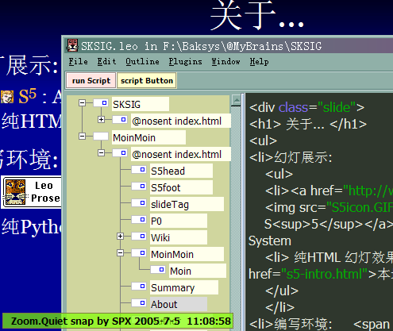

漫谈 FLOSS 许可证
+ ZPyUG/ZEUUX社区介绍
制作免责
-
 伙同所有热心的
ZEUUX.org
成员共同制作
......
伙同所有热心的
ZEUUX.org
成员共同制作
......
- 一切资料来自互联网
- 所有想法来自日常学习工作
- 所有体悟来自各种沟通分享
- 所有知识来自网络分享印证
- 所有经验来自个人失败经历……
...
提纲
- 软件天生是自由的!
- FLOSS许可证体系?
- 合理使用自由软件代码
[...]
第一段严格意义的代码在 1842年诞生
Ada
Lovelace
[...]
FAQ:公共软件~Public domain software
一切自由
仅限本身
...
FAQ:共享软件~Shareware
部分使用
...
FAQ:免费软件~Freeware
自由使用/发布
...
FAQ:专有软件~Proprietary software
无有自由
...
FAQ:商用软件~Commercial software
上述任一
皆可
...
FAQ:自由软件~Free software
完满自由
...
FAQ:开源软件~Open Source software
部分自由
...
软件许可证的本质~
使用软件拷贝的权利
房产证...
软件版权->混淆概念
夺走vs复制
我们对于“实物所有权”的思考往往是围绕从别人那里“夺走物品”是否正确来展开的，众所周知，“复制物品”同“夺走物品”完全是两码事，可持有者却要求我们将两者同等看待
软件版权->夸大其辞
复制带来
伤害?!
不过，复制行为本身并不会对他们造成直接影响，也不会对任何人造成伤害。损失只有在复制者有可能掏腰包购买其软件的前提下才会发生。
很显然，大部分复制者都不愿意掏腰包
软件版权->法律
法律!=
真理
法律并不一定代表对错，这是常识。每一个美国人都知道，50年前在美国的许多州，黑人坐在汽车车厢的前端是“违法”的，而实际上，只有种族主义者才认为黑人坐在汽车前端是“错误”的
软件版权->自然权利
直接vs间接
影响
第一种情况可以与实物作对比;
在第二种情况下，人们被告知作者所拥有的自然权利是我们这个社会所约定俗成的传统;
宪法声称版权必须是暂时性的，宪法还声明版权的目的是为了促进进步，而不是犒劳作者
我们这个社会的真正传统是：版权系统侵犯了大众的自然权利，一切必须根据大众的利益进行判定
软件版权->经济学
竞争vs战争
此时 “让最优秀的人获胜” 就让位于 “让我赢，不管是否是最优秀的。”
私权软件是有害的， 并非因为它是一种竞争形式，而是因为它是与社会公民为敌的战争形式;
软件版权->经济学
自由vs价格
如果给予开发者以较好的回报，他们就能制作出更多的软件;
假设我们所需要的只是“软件的开发”，而不论其是否拥有版权;
任何实物，无论它是否“名花有主”，都不会影响到它“是什么东西”，也不会影响到你将“如何使用”它;
社会需要什么？需要的是可以真正拥有的信息，人们可以读取、修改、适应和改进它，而不仅仅是使用，但版权持有者却只交给了我们一个无法研究或改变的黑匣子!
自由软件事关自由，而非价格
对等版权
GPL
的传染性
GPL(){
you can use it freedom;
GPL();
}
|
 |
CopyLeft
软件许可
>58种!

...
FLOSS许可体系

...
GPL v2 1991 对抗::
"软件专利"
"系统库"
...
FAQ:软件专利
最邪恶
生化武器
软件有三个层次：
1 软件的功能，feature
2 软件实现的技术和思路
3 软件的源码、文档和可执行程序;
软件专利妄图控制1~2层，将所有开发者陷于不可知的各种法律隐患中
GPL
v3
提升许可证的兼容性

...
GPL
v3
:许可覆盖下的合法行为
传播
...
GPL
v3
:制作或者接受副本的传播行为
发布
...
GPL
v3
:包含于主要部件但不属于该部件
系统库
可执行程序的“系统库”不是指整个程序
GPL
v3
:保证联合体的目标友好
聚集体
...
GPL
v3
:保证下游接收者权益
自动授权
...
GPL
v3
:授权恢复
60天内
如果您停止违反本授权，那么您从某个特定版权所有者处获取的授权许可能够以以下方式恢复
（a）您可以暂时地拥有授权，直到版权所有者明确地终止您的授权；
（b）如果在您停止违反本授权后的60天内，版权所有者没有以某种合理的方式告知您的违背行为，那么您可以永久地获取该授权
~合法使用GPL
软件代码
as 外部服务调用::
非法使用::
...
~合法使用LGPL
软件代码
as 链接库/外部服务调用::
非法使用::
...
~合法使用BSD类
软件代码
as 模块/链接库/外部服务使用::
非法使用::
...
态度...

...
-
 共同的旗帜！
共同的旗帜！
- 新的开始:

- 再次开始:
ZPyUG--珠江三角洲地区Python用户组
- ……更多其它地区的 *PUG 组织在筹备中！
- 自由！高贵的文化支柱精神
- 社区！神奇的软件开发模式
- 我们的奋起宣言！
每日至少抽一刻钟,解答邮件列表中初学者的问题，
每周至少抽两小时,整理新学知识将体验发表/分享出去，
通过Blog/Wiki/MaiList/个人网站……
每旬至少抽四个小时, 来翻译自个儿喜爱的自由软件的文档，
每月至少抽八小时, 快乐的编程，推进自个儿的项目，
每年至少参加一次, 自由软件的活动，传播自由软件思想，
发展一名“自由人”……
只要我们每个人都坚持下去……
10年！就足以改变中国软件的整体风貌！
引发自
圣・RMS ！！！
关于S5
- 幻灯展示:
-
 S5 : A Simple Standards-Based Slide Show System
S5 : A Simple Standards-Based Slide Show System
- 纯HTML 幻灯效果工具制作 本地介绍页面
- 编写环境:

-
 Leo
Leo
:: 文学编程环境
- 纯Python 实现的通用编辑环境
文档版本
- 版本历史::
- v1.1 080131 pm. 根据讲演反馈追加合理化使用不同级别自由软件的方式
- v1.0 080131 调整顺序等细节
- v0.9 080129 补充GPLv3细节
- v0.8 080128 咨询专家,确认细节
- v0.7 080127 创建,模板和CC许可
 发布
发布
 成立..
成立..
 -- 知识管理
-- 知识管理
 CPUG 邮件列表;
BPUG 邮件列表;
python.cn 邮件列表;
cpug-eastchina 邮件列表;...
CPUG 邮件列表;
BPUG 邮件列表;
python.cn 邮件列表;
cpug-eastchina 邮件列表;...
 社区门户 域名Exoweb捐赠,主机由啄木鸟社区提供
社区门户 域名Exoweb捐赠,主机由啄木鸟社区提供


 "Python语言入门"
"Python语言入门"